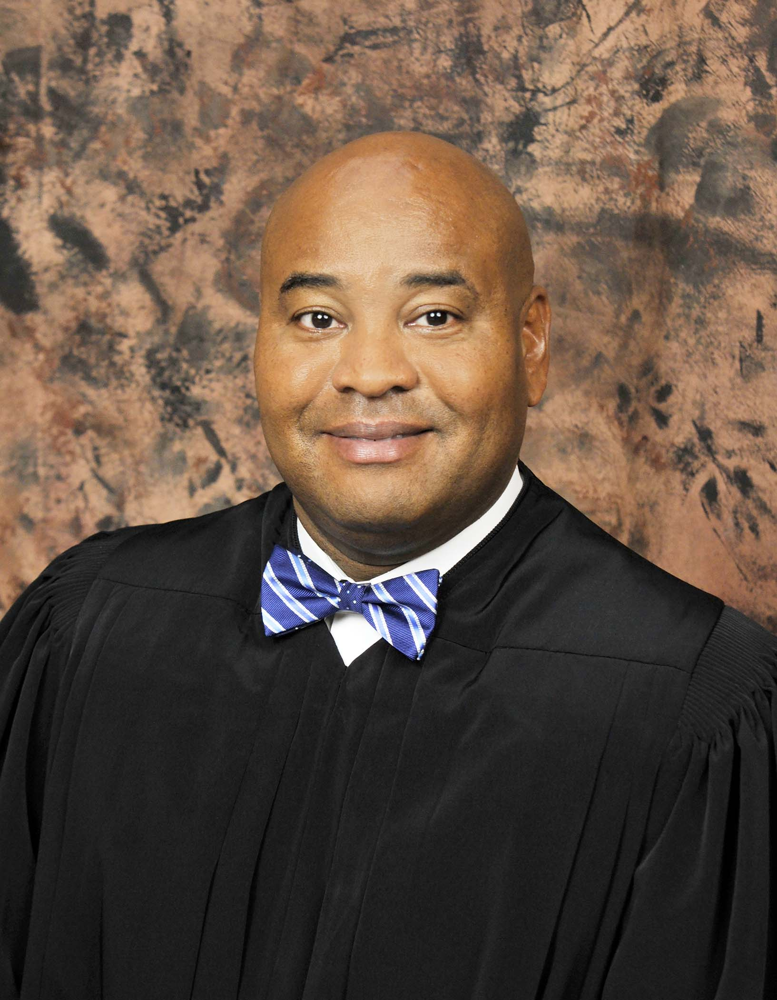

CURRENT JUDGES
Judge Rudolph R. Pyle
4th District
Judge Rudolph R. Pyle III was appointed to the Court of Appeals
of Indiana by Gov. Mitch Daniels and took his seat on Aug. 27, 2012.
The Rhode Island native graduated from Anderson University in 1992
with degrees in history and political science and earned a Masters
Degree at the Thomas Jefferson Program in Public Policy at the
College of William & Mary in Williamsburg, VA.
He served four years as an Indiana State Trooper, then earned his
law degree in 1997 at Indiana University Maurer School of
Law-Bloomington. Judge Pyle was appointed as a Deputy
Prosecuting Attorney in Madison County in 2004 and was appointed Judge of Madison Circuit Court in 2009. He has taught
Public Policy; American National Government; Constitutional Law;
Law, Politics & Society; and Criminal Law as an adjunct professor
at Anderson University. He also is an adjunct faculty member
at Indiana University Maurer School of Law and is an occasional guest
lecturer at the Justice Academy of Turkey.
of Indiana by Gov. Mitch Daniels and took his seat on Aug. 27, 2012.
The Rhode Island native graduated from Anderson University in 1992
with degrees in history and political science and earned a Masters
Degree at the Thomas Jefferson Program in Public Policy at the
College of William & Mary in Williamsburg, VA.
He served four years as an Indiana State Trooper, then earned his
law degree in 1997 at Indiana University Maurer School of
Law-Bloomington. Judge Pyle was appointed as a Deputy
Prosecuting Attorney in Madison County in 2004 and was appointed Judge of Madison Circuit Court in 2009. He has taught
Public Policy; American National Government; Constitutional Law;
Law, Politics & Society; and Criminal Law as an adjunct professor
at Anderson University. He also is an adjunct faculty member
at Indiana University Maurer School of Law and is an occasional guest
lecturer at the Justice Academy of Turkey.
